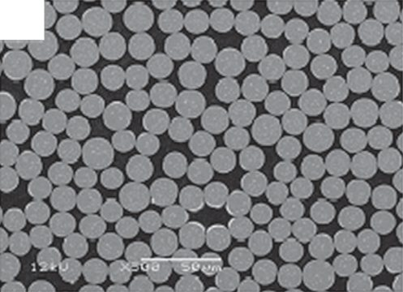
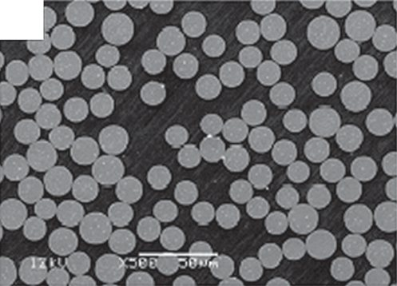
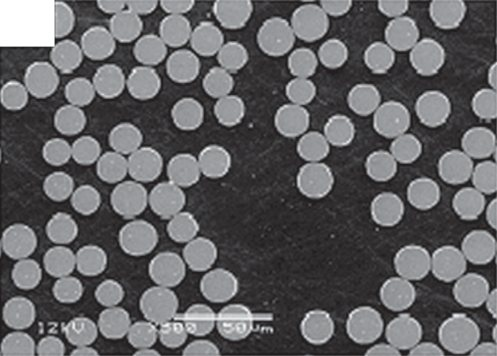
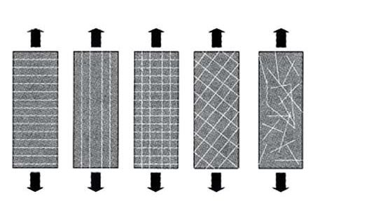
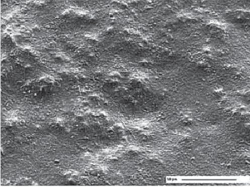
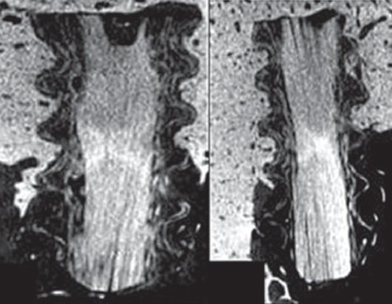
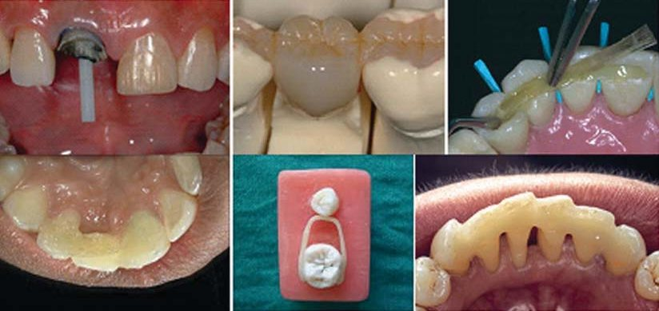

Огляди · журнал «ДентАрт» 2022 №2
Найновіші дані про реставраційні композити на основі скловолокна. Частина 2
An update on glassfiber dental restorative composites: a systematic review
Надійна адгезія між скловолокном і полімерною матрицею може бути отримана за допомогою силанового сполучного агента. Повідомлялося, що реакція конденсації між силанольною групою та неорганічною молекулою, такою як скловолокно, веде до додаткового збільшення міцності зчеплення і меншої абсорбції води.
Адгезія волокон до полімерної матриці
Формування взаємопроникної полімерної мережі між матрицею і скловолокном було запропоноване, щоб додатково посилити зв’язок між ними. Структура взаємопроникної полімерної мережі була сформована з лінійного полімеру, який частково або повністю розчиняється бі- або багатофункціональними акрилатними мономерами матриці. Адгезія між скловолокном і матриксом впливає на міцність. Без адекватної адгезії скловолокно діє як включення в матрицю, що насправді послаблює композит.
Одна з головних проблем для клінічної довговічності – це якість адгезії між композитом, армованим скловолокном, та іншою полімерною матрицею – в основному через суттєві відмінності між показниками деформації з іншими композитами, що призводить до значної концентрації напруг поблизу межі розділення двох матеріалів. Міжфазні сили, які утримують два компоненти разом, можуть виникати від сил Ван-дер-Ваальса, хімічних зв’язків, електростатичного тяжіння або механічної ретенції. Міцність адгезивного зв’язку значно залежить від типу бондингу, в’язкості адгезиву та його хімічного складу, а також механічних властивостей субстрату. Крім того, оскільки будь-яке визначення міцності адгезії включає вимірювання напруги руйнування, напружений стан на всьому протязі адгезивного з’єднання також відіграє важливу роль.
Передбачається, що на міжфазний зв’язок між композитом, армованим скловолокном, і композитним наповнювачем не вплине додавання наповнювача за умови, що підвищена в’язкість композиту не впливатиме на змочування поверхні композиту, армованого скловолокном. Оскільки у стоматології часто використовується армування односпрямованими волокнами, їх властивості за своєю суттю ортотропні. Міжфазна/міжшарова міцність на зсув – зазвичай найслабша ланка в їх механічній відповіді. Фактичний механізм зв’язку між дослідженими частинками скловолоконного наповнювача і композиту може бути реалізований шляхом хімічної адгезії, механічних зв’язків або їх комбінації. Затверділий композит, армований скловолокном, має відносно гладеньку поверхню, і міцність адгезії збільшується зі збільшенням кількості наповнювача, тому механічна ретенція відіграє лише незначну роль у формуванні адгезивного зв’язку.
Вплив складу
Важливим є склад скловолокна, особливо вміст лугів, іонів лужноземельних металів; оксид бору реагує з оксидами іонів води, що призводить до вимивання оксиду бору з поверхні скла. Вилуговування скла-наповнювача знижує його міцність, руйнуючи опорну структуру скла. B2O3 є у кількості 6-9 масової частини % у E-скловолокнах і <1 масової частини % у волокнах S-скла.
Корозія поверхні скла може бути зведена до мінімуму за рахунок правильної обробки скловолокна. Щоб вирішити цю проблему, було використано композити, армовані попередньо просоченим скловолокном. Вони попередньо просочені своєю матрицею і не потребують змочування перед використанням. І навпаки, просочені волокна в тому вигляді, в якому вони виробляються, являють собою скловолокна, просочені високопористою полімерною матрицею PMMA, яка вимагає додаткового змочування смолою, що не містить розчинників, або сумішшю смоли рідина – порошок.



Розподіл волокон
На рис. 6 показано різні варіанти розподілу скловолокна. Розподіл скловолокна надає різних властивостей матеріалу, що і впливає на сферу його застосування. Якщо ці волокна розподілені рівномірно, вони збільшують стійкість до втоми, а якщо вони розташовані у певних зонах, то можуть збільшити жорсткість і міцність.
Було доведено, що полімерні матеріали, армовані коротким скловолокном, розподіленим хаотично, мали вищі значення міцності на згинання, в’язкості руйнування і міцності на стискання. Хаотично розподілені короткі волокна забезпечують ізотропне армування в різних напрямках, а не в якомусь одному. Позиціонування односпрямованих волокон Е-скла в тому ж дослідженні показало значний вплив на міцність і модуль пружності матеріалів, армованих скловолокном. У більшості випадків у стоматологічній літературі описано, що армування волокном робили в центрі композитного зразка. Однак з точки зору інженерії відомо, що положення і орієнтація армування в конструкції впливають на механічні властивості.
Водопоглинання матриксом композиту, армованого скловолокном
Водне і вологе середовище, таке як ротова рідина, може викликати «корозію» поверхні композиту, армованого скловолокном, у результаті дифузії води через полімерну матрицю. Це може призвести до зниження механічних властивостей і зміни структури композиту, поскільки на поверхню скловолокна впливає гідроліз оксидів лужних і лужноземельних металів у склі та вилуговування іонів. Склад скла – критичний фактор гідролітичної стабільності скловолокна. Силанізація, яка допомагає зв’язати волокна з полімерною матрицею, також впливає на гідролітичну стабільність композиту. Помічено, що існує потенційний шкідливий ефект води у міжфазній адгезії між полімерною матрицею і скловолокном через регідроліз силанового сполучного агента.
На адсорбцію води також впливає імпрегнація волокон смолою. Якщо є ділянки, де волокна не повністю покриті смолою, у структурі затверділого композиту будуть порожнини, які збільшуватимуть сорбцію води. До того ж вода має пластифікуючий ефект в результаті взаємодії зі структурою полімера.
Було проведено багато досліджень на тему сорбції води композитами, армованими скловолокном, і зроблено висновок, що сорбція води знижує механічні властивості, у тому числі міцність на згинання та резистентність до навантажень полімерів, що використовуються для виготовлення базисів знімних протезів.
Дефекти міжфазного армування композит/матеріал заважають передачі сил між волокнами та матриксом. Крім того, порожнини погано імпрегнованих волокон стають тілом, включеним у шину. Кисень може інгібувати полімеризацію матриксу смоли, знижувати здатність сприймати навантаження композитами, армованими скловолокном, і збільшувати водопоглинання, що негативно впливає на механічні властивості.
Результати, що ґрунтуються на доказовій медицині
Протягом останніх кількох років було досліджено різні властивості композитів, армованих скловолокном, зібрано значний обсяг даних, що допомогло сформувати інформацію для так званої «доказової клінічної бази». Результати, що ґрунтуються на даних доказової медицини, у цьому огляді подано в таблиці 5.
| Характеристики |
|---|
| Механічні |
| Міцність, жорсткість, ударна в’язкість і опір втомі |
| В’язкопружність |
| Адгезивні властивості |
| Термічні |
| Біосумісність |
Механічні властивості
Механічні властивості полімерних матеріалів мають дві сторони: (I) пов’язану з макроскопічними властивостями і (II) пов’язану з молекулярними властивостями, що включає хімічний склад та фізичну структуру. Зазвичай використовувані механічні методи – міцність на стискання, міцність на згинання, модуль пружності і опір втомі. Результати й інформація, отримані за допомогою цих методів, дають деяке пояснення, чому використання матеріалу було неуспішним і як його можна поліпшити.
Чим міцніші зв’язки між волокном і смолою в композиті, армованому скловолокном, тим вищі статичні, ударні і втомні властивості. Твердість та діаметральна міцність напруги збільшуються при включенні частинок силанованого наповнювача або волокна. Механічні властивості, такі як міцність, жорсткість, ударна в’язкість і опір втомі, залежать від форми та орієнтації армуючих елементів. Ефективність армування волокном (фактор Кренчеля) варіює у шарах армованого композиту залежно від орієнтації волокон, як показано на рис. 7.
Механічні властивості конструкції композиту, армованого скловолокном із суцільним односпрямованим ходом волокон, може дати кращі результати порівняно з армуванням іншими типами розміщення волокна, такими як короткі та хаотично орієнтовані. Кренчель припустив, що ефективність армування волокнами (фактор Кренчеля, значення від 0 до 1) оцінює міцність композитів, армованих волокном. Армуюча ефективність односпрямованих волокон теоретично становить 1 (100%), це означає, що армуючі властивості можуть бути отримані в одному напрямку. Як засвідчили експериментальні дані, властивості гнучкості композитних ендоштифтів, армованих скловолокном, вищі, ніж у металевих штифтів, і подібні до дентину.
Безперервні двоспрямовані (ткані, переплетені) волокна мають армуючі волокна у двох напрямках, отже, полімер армований однаково у двох напрямках [коефіцієнт Кренчеля 0,5 (50%) або 0,25 (25%)]. Однак ткані волокна надають полімеру міцність, діють як стопери тріщин і особливо підходять у випадках, коли напрямок вектора навантаження невідомий або недостатньо місця для односпрямованих волокон. Якщо волокна в армованому композиті орієнтовані хаотично, як рубані короткі волокна, механічні властивості однакові у всіх напрямках і є ізотропними тривимірно [коефіцієнт Кренчеля 0,38 (38%) у двох вимірах і 0,2 (20%) у трьох вимірах]. Дослідження було проведене для оцінки статичного і динамічного навантаження на розрив композитів, армованих скловолокном, утримуваного за допомогою структур зуба, і одержані результати в обох умовах були 195,80 Н і 190,57 Н відповідно.
Різні дослідження засвідчили наростання різних середніх сил під час жування, тобто 14 Н, 45 Н та 120 Н. Скловолоконне композитне армування має прийнятну міцність для клінічного застосування при середніх жувальних навантаженнях. Спочатку попередньо імпрегноване скловолоконне композитне армування на основі полікарбонатної матриці та Е-скловолокна показало міцність на згинання і модуль стиснення 297-426 МПа і 965 МПа відповідно. Міцність на згинання і модуль вищі у волокнах з більшим вмістом волокон порівняно з тими, які містять меншу кількість волокон, наприклад, 339 МПа проти 300 МПа, відповідно, і модуль 6 ГПа та 3 ГПа.
Світлова полімеризація впливає на твердість і міцність при згинанні. Чим вищий ступінь перетворення мономеру, тим вища міцність. За результатами механічних випробувань на розтягування видно, що ці властивості були помітно поліпшені за рахунок додавання смоли до складу. Міцність зразка композиту, армованого волокном, зросла з 18,9 МПа до 43,4 МПа.

В’язкопружність
Хан та ін. вивчили в’язкопружні властивості композитів, армованих скловолокном, та звичайних композитів і виявили, що в’язкопружні властивості композитів, армованих скловолокном, були близькі до властивостей дентину (17 ГПа). Значення порушення адгезії для композитів, армованих скловолокном, і традиційних композитів становили 15,32 ГПа і 9,34 ГПа відповідно.
Адгезивні властивості
Ла Белл та ін. досліджували адгезію різних штифтових систем, включаючи металеві (титанові), штифти з вуглепластику та скловолокна. Порівняно з іншими штифтами не було порушень адгезії (після цементування) при індивідуально сформованих штифтах, армованих скловолокном, тоді як для металевих та вуглецевих штифтів частота порушень адгезії становила 70% і 55% відповідно, що свідчить про кращу міжфазну адгезію цементу до цих штифтів. Кадам та ін. також встановили, що порушення адгезії спостерігалося між цементно-дентинною межею, за якою слідує штифтово-цементна межа, що має проблеми в адгезії між штифтово-цементно-дентинними поверхнями.
Типи систем для фіксації також значно впливають на силу адгезії. Адгезивно зафіксовані композитні скловолоконні штифти мали кращу адгезію, ніж штифти, зафіксовані традиційним способом.
Механізм порушень адгезії залежить також від техніки, яка була використана для встановлення волоконного штифта. Герметизуючі властивості одноетапної техніки порівнювалися з двоетапною технікою, і було зазначено, що встановлення штифта шляхом одноетапної обтурації менш ефективне, ніж шляхом двоетапної обтурації. Фактично при одноетапній процедурі спостерігалися розриви між силером та внутрішньокореневим дентином. За двоетапної техніки виявлялося менше дефектів між фазами.
Термічні властивості
Лінійний коефіцієнт теплового розширення залежить від орієнтації скловолокна. Безперервне односпрямоване волоконне армування має два коефіцієнти теплового розширення. Один, у напрямі волокон, дає нижчий лінійний коефіцієнт теплового розширення через механічні обмеження самого волокна. Другий, у напрямку, перпендикулярному волокнам, дає вищі значення полімерної матриці. Це пов’язано більшою мірою із жорсткістю волокон, які в основному запобігають розширенню матриці у поздовжньому напрямку, тому полімерна матриця змушена розширюватися сильніше, ніж зазвичай у поперечному напрямку. Значення лінійного коефіцієнта теплового розширення для односпрямованого скловолокна було 5,0·10⁻⁶ °С⁻¹.

Біосумісність
Мікробна адгезія спостерігалася у скловолокні, покритому слиною. Встановлено, що прилипання Streptococcus mutans до коротких скловолоконних елементів армування було значно нижчим порівняно з дентином та емаллю; проте покриття слиною значно зменшувало адгезію композитів, армованих волокном. Інше дослідження дало такі ж результати, і було помічено, що просочування скловолокна гідрофобними смолами зменшувало адгезію мікроорганізмів до поверхні. Дослідження з Candida albicans засвідчило, що армування Е-скловолокном не збільшує адгезію грибкової флори до поверхні матеріалу.
Балло оцінював біосумісність композитного скловолоконого армування і виявив клітинну проліферацію і диференціювання на BisGMA/TEGDMA, армованому Е-скловолокном, культивовані клітини утворили багатоклітинний шар на поверхні, як показано на рис. 8. Раніше повідомлялося про біосумісність BisGMA, з можливістю використовувати як дентальний імплантат. Важливо враховувати рівень полімеризації BisGMA. Її можна забезпечити за рахунок збільшення часу фотополімеризації у поєднанні з наступним затвердінням під дією тепла перед імплантацією.
У цьому ж дослідженні автори виявили біомеханічне з’єднання кістки і композиту, армованого волокном. Мікро-КТ показує (рис. 9) кісткові трабекули на поверхні композитного імплантата, армованого волокном. Нову апозицію кістки було виявлено між різьбою імплантата, що свідчить про гарну біосумісність композитних імплантатів, армованих волокном.

Клінічне застосування
Композити, армовані скловолокном, є групою нових матеріалів з обмеженою комерційною клінічною інформацією. Однак з біосумісними волокнами і матричними системами ці композити знайшли застосування як біоматеріал. До факторів біосумісності, що впливають на використання у стоматології композиту, армованого волокном, належать: естетика, міцність, відсутність корозії та алергії на метали і використання біля крісла. Композит, армований скловолокном, був презентований як новий матеріал для альтернативного лікування в естетичній і безметаловій стоматології. Важливою особливістю композитів є їхня здатність адаптуватися доти, доки вони не будуть відповідати вимогам дизайну, що робить скловолокно придатним для широкого спектру стоматологічних застосувань. Сфера застосування у стоматології зведена в таблицю 6 і показана на рис. 10.
| Застосування | |
|---|---|
| Протезування | знімні протези, незнімні часткові протези |
| Ендодонтія | штифти для кореневих каналів |
| Реставраційна стоматологія | тимчасові реставрації |
| Пародонтологія | пародонтальне шинування |
| Ортодонтія | ортодонтичні ретейнери, фіксатори простору |

Застосування у протезуванні
У 1960-х роках скловолокно випробували як армуючий матеріал для виготовлення базисів зубних протезів. Відтоді було проведено багато досліджень властивостей міцності скловолоконного композиту. Армування волокном нині використовується для підвищення ефективності стоматологічних матеріалів у сфері полімерів під час виготовлення базисів знімних протезів. Для посилення міцності тимчасових часткових протезів можуть використовуватися різні типи волокон, проте різні дослідження засвідчують, що скловолокно має набагато ефективніші результати застосування.
Перше експериментальне протезування термопластичним композитом, армованим скловолокном, було для виготовлення незнімного часткового протеза при протезуванні одиночного дефекту зубного ряду. Ці протези були виготовлені у лабораторії, а потім зафіксовані на зубах. Каркас попередньо був оброблений PMMA мономером. Причиною невдач для цього каркаса були або дебондинг між композитом, армованим скловолокном, і композитом, або когезійний поділ композиту, армованого скловолокном, поблизу поверхонь, що склеюються. Цей поділ, імовірно, стався через набухання полікарбонатної матриці PMMA мономером, який використовувався для обробки внутрішньої поверхні скловолокна перед склеюванням.
Було проведене порівняльне дослідження для оцінки склеювання полімерної матриці з полімерами основи зубного протеза, що містять різні типи волокон, включаючи вуглець, арамід, тканий поліетилен і скловолокно, а також було виявлено, що скловолокно дає кращі результати з точки зору естетики і легкості зв’язування з полімерною матрицею. Композити, армовані скловолокном на основі S-скловолокна з термообробленою матрицею BisGMA/TEGDMA, демонструють гарні фізичні властивості, але вони погано зв’язуються з композитами і були важкими в роботі, в той час як зі світлоактивованою BisGMA було знайдено оптимальне поєднання характеристик роботи з ними і фізичних властивостей.
Знімні протези, що містять композити, армовані скловолокном, мали підвищену міцність втоми у порівнянні з металевими. Однак дослідження in vitro засвідчило, що хоча опір втомі скловолокна було збільшено, відносно низький модуль пружності може обмежувати їх клінічне використання там, де потрібна значна жорсткість матеріалу. Механічна втома, яка виникає клінічно, може також сприяти зниженню механічних властивостей композитів, армованих скловолокном, внаслідок старіння.
Незнімні часткові протези, армовані скловолокном, вважаються перспективною альтернативою литим металевим незнімним частковим протезам, фіксованим адгезивно. Вони дають можливість виготовлення адгезивних, естетичних та безметалових протезів і знижують біологічні втрати. Розміщення волокна у місці розтягування – найефективніше місце для армування. Їх використання для незнімних часткових протезів, фіксованих адгезивно, вітається за відповідний модуль пружності порівняно з металом і кращу адгезію композитного фіксуючого матеріалу до каркаса.
Дослідження in vitro засвідчили, що армування волокнами збільшує міцність полімерного композиту на злам. До того ж використання композитів, армованих скловолокном, знижує ризик алергійних або токсичних побічних ефектів металевих сплавів. Затвердіння забезпечує кращі механічні властивості за менший час. Клінічне випробування засвідчило, що ймовірність успіху становить 71%, а виживання – 78% через 5 років при огляді незнімних часткових протезів з композиту, армованого скловолокном, у бічній ділянці.
Застосування в ендодонтії
Жорсткість штифта має дорівнювати або бути близькою до жорсткості дентину кореня і рівномірно розподіляти оклюзійні сили по довжині кореня. Композитні ендодонтичні штифти, армовані скловолокном, були використані замість штифтів із металевих сплавів та кераміки. Виявлено, що виготовлені заводським способом скловолоконні штифти мали нижчі властивості на згинання, ніж індивідуально полімеризований матеріал. Однак механічні властивості залежать від складу, структури і діаметра ендодонтичних штифтів. Індивідуально сформований штифт зі скловолокна з матриксом із напіввзаємопроникної полімерної сітки мав кращу адгезію до композитного фіксуючого цементу, ніж виготовлений заводським способом штифт із поперечно зшитим полімерним матриксом. Це менший ризик втрати ретенції завдяки вищим значенням міцності зчеплення штифтів із взаємопроникною полімерною сіткою, ніж у виготовлених заводським способом композитних штифтів, армованих волокном.
Механічні властивості штифтів, армованих волокном, були проаналізовані й описані, проте спостерігалася значна розбіжність у результатах досліджень, які залежать від складу матеріалу, з якого складається штифт: як правило, штифти, армовані скловолокном, характеризуються термореактивною полімерною матрицею, армованою високоефективними волокнами; волокна зазвичай спрямовані паралельно осі штифта, тому вищі міцність і модуль пружності виникають уздовж цього напрямку. Проте остаточні механічні властивості також сильно залежать від структурної цілісності, розміру, щільності, розподілу волокон, об’ємної частки, порожнин і внутрішнього зв’язку між волокном і матрицею. Розтягуючі, зсувні, згинальні або стискаючі напруги призводять до різних значень модуля пружності або максимальної міцності для одного і того ж композитного матеріалу. Крім того, ці значення залежать також від кута між волокнами і напрямком навантаження.
Застосування у реставрації зубів
Нещодавно як матеріал для прямої реставрації зубів був презентований композит, армований коротким скловолокном, – everX Posterior. Композит призначений для використання в ролі пломбувального матеріалу у ділянках, які сприймають високі механічні навантаження, особливо у великих порожнинах вітальних і девітальних жувальних зубів. Він складається з композитного матриксу, випадковим чином орієнтованого Е-скла та неорганічного дисперсного наповнювача. Матрикс містить BisGMA, TEGDMA і PMMA, що утворюють напіввзаємопроникну полімерну сітку (net-poly(methyl methacrylate)-inter-net-poly(bis-glycidyl-A-dimethacrylate)), має хороші адгезивні властивості і підвищує ударну в’язкість полімерної матриці. Дослідження in vitro засвідчили поліпшені здатність сприймати навантаження, міцність на згинання і в’язкість руйнування стоматологічного композиту, армованого коротким наповнювачем з Е-скловолокна, у порівнянні з традиційними композитами.
Композити з коротким скловолокном також продемонстрували контроль напруги усадки при полімеризації за рахунок орієнтації волокон, і таким чином мікропідтікання було зменшене порівняно з використанням звичайного композиту. На підставі згаданих досліджень передбачається, що композити, армовані коротким скловолокном, повністю задовольняють вимоги і можуть бути використані для реставрації бічних зубів. Вони призначені для об’ємного внесення в ролі підкладки, яка буде покрита шаром традиційного композиту. Важко передбачити клінічну довгострокову ефективність, виходячи лише з лабораторних експериментів.
Річне клінічне дослідження засвідчило гарні клінічні характеристики нової комбінації матеріалів об’ємного внесення композиту з коротким скловолокном і поверхневого шару з традиційного композиту на ділянках, які сприймали високі навантаження протягом 1 року. Композит на основі короткого скловолокна показав значно більші в’язкість руйнування (4,6 МПа·м⁻¹), міцність на згинання (124 МПа) і модуль пружності (9,5 ГПа), ніж усі інші досліджувані композитні матеріали. Глибина затвердіння була оцінена як 4,6 мм, що було схоже на інші композити для об’ємного внесення, і була вищою, ніж у традиційних композитів. Матеріал також показав нижчий відсоток полімеризації усадки (0,17%) у порівнянні з іншими дослідженими композитами.
Використання в ортодонтії
Фалліс використав спеціальний дріт зі скловолокна, який був прийнятним для пацієнтів і мав достатню структурну цілісність. Берстон і Кульберг запропонували нове клінічне застосування композитів, армованих скловолокном, в ролі естетичної з’єднувальної дуги, що використовується для активного переміщення зубів. Для цих цілей адгезивні властивості і показники руйнування композиту, армованого скловолокном, під впливом жувальних сил мали б велике значення. Мейєрс і співавт. та Фройденталер і співавт. продемонстрували гарні адгезивні показники композиту, армованого волокном, до емалі і чудову адгезію ортодонтичних елементів до композитів, армованим скловолокном. З іншого боку, проблема жорсткого з’єднання зубів полягає у їх фізіологічній рухливості під час функції – на противагу властивим композитам крихкості і жорсткості. Таким чином, результати клінічних досліджень у прямому композитному шинуванні сегментів зубів постійно бентежили, демонструючи поломку або руйнування конструкції протягом кількох тижнів або місяців.
У клінічному дослідженні протягом 6 років порівнювався зв’язок частоти клінічних невдач і поломок двох типів адгезивно з’єднаних лінгвальних ортодонтичних ретейнерів: ретейнерів зі скловолокна та кручених ретейнерів з неіржавіючої сталі. Результати показали, що частота дебондингу на верхній щелепі була 21,42% для групи ретейнерів зі скловолокна і 22,22% для групи металевих; частота дебондингу на нижній щелепі становила 11,76% для ретейнерів зі скловолокна і 15,62% для металевих. Частота поломки на верхній щелепі була 7,14% для ретейнерів зі скловолокна і 16,66% для металевих; частота поломок на нижній щелепі становила 8,82% для ретейнерів зі скловолокна і 15,62% для металевих. Ретейнери зі скловолокна і ретейнери з неіржавіючої сталі показали аналогічні результати з точки зору дебондингу і поломки.
Берстон і Кульберг виступали за використання композитів, армованих скловолокном, для пасивного й активного застосування в ортодонтії. Спочатку довгі безперервні волокна були просякнуті смолою і прикріплені до зубів як ретейнери. Ретейнери першого покоління були занадто жорсткими, щоб дозволити зубам переміщатися, а також волокна й адгезиви були технічно незадовільними. Пучки скловолокна (EverStick Ortho), попередньо просочені полімером ПММА, забезпечують як мікромеханічну, так і хімічну адгезію. І матеріал, з якого виготовлений ретейнер, і композит мають вирішальне значення для успішної фіксації лінгвальних ретейнерів.
Є обмежені дані про клінічну ефективність, дизайн та конструкцію фіксаторів простору зі скловолокна. Контамінація вологою – одна з головних причин невдач утримання місця конструкціями з композитів, армованих скловолокном. Раніше композити, армовані скловолокном, розміщували тільки з язичної поверхні, щоб мінімізувати оклюзійні сили, які діють на них. Однак частота невдач була високою, що, ймовірно, було пов’язане зі зміною доступної оклюзійно-ясенної відстані, а дебондинг на межі емаль – композит спостерігався вже через 3 місяці. В основному фіксатори місця з композиту, армованого скловолокном, були встановлені на тимчасові зуби, наявність безпризмової емалі могла негативно вплинути на адгезію композиту.
Руйнування рамки зі скловолокна є іншим серйозним типом поломки через можливе супрапрорізування зуба-антагоніста і його зіткнення з каркасом фіксатора простору. Нідхі та ін. оцінили клінічну ефективність фіксаторів простору типу «band and loop» з композиту, армованого скловолокном, з часовими інтервалами 5 місяців, і було доведено, що фіксатори простору зі скловолокна мали вищий відсоток успіху, хоча різниця була статистично незначною. Це дослідження підтвердило, що фіксатори простору зі скловолокна можна використовувати як альтернативу звичайному фіксаторові для короткострокового використання.
Використання у пародонтології
Через властиву композиту жорсткість його використання у шинуванні приречене на невдачу, і щоб подолати це, структура композиту була армована. Композити зі скловолокна дозволили клініцистам уникнути використання металевого дроту і полімерного композиту для пародонтального шинування, це більш естетично, такий метод має нескладний дизайн, простий у виготовленні і має триваліший термін служби. Для консервативного шинування і непрямого протезування доступні різні типи комерційних шин зі скловолокна. Шини, армовані волокном, мають достатню механічну міцність, задовільну естетику, не порушують оклюзію і дозволяють підтримувати належну гігієну ротової порожнини.
Висновки
У цьому огляді було зроблено спробу систематизувати, що таке композити, армовані скловолокном, для застосування у стоматології. Цей огляд не претендує на те, щоб бути вичерпним, але автори вважають, що в рамках обмежень (стоматологія) він дає достатнє уявлення про наявні докази. Зроблено висновок, що композити, армовані скловолокном, мають міцність і модуль пружності, схожі з властивостями тканин зуба. Питома механічна і фізична міцність та питомий модуль пружності цих армованих волокном композитних матеріалів можуть помітно перевершувати існуючі композити на основі смол та металеві матеріали.
Більшість даних, описаних у цьому огляді, є лабораторними дослідженнями, тоді як клінічних досліджень було проведено порівняно небагато. Кілька опублікованих клінічних випробувань дозволяють спрогнозувати, принаймні в короткостроковій перспективі, успіх реставрацій на основі скловолокна, включаючи ендодонтичні штифти, незнімні часткові протези і реставрації жувальних зубів. З цих причин композити, армовані скловолокном, з’явилися як основний клас конструкційних матеріалів і використовуються або розглядаються як заміна традиційних матеріалів у стоматології.
Література
- P. Magne, D. Cascione. Influence of post-etching cleaning and connecting porcelain on the microtensile bond strength of composite resin to feldspathic porcelain. J. Prosthet. Dent. 96 (2006) 354–361.
- F. J. McCabe, W. G. A. Walls. Applied Dental Materials, 8th ed. Blackwell Science, Oxford, 1998.
- F. Lutz, I. Krejci. Resin composites in the post-amalgam age, Compend. Contin. Educ. Dent. 20 (1999) 1138–1148.
- M. J. Tyas, K. J. Anusavice, J. E. Frencken, G. J.Mount. Minimal intervention dentistry – a review. FDI Commission Project 1–97, Int. Dent. J. 50 (2000) 1– 12.
- Y. Yashida, K. Shirai, Y. Nakayama, M. Itoh, M. Okazaki, H. Shintani, S. Inoue, P. Lambrechts, G. Vanherle, V. B. Meerbeek. Improved filler-matrix coupling in resin composites. J. Dent. Res. 81 (2002) 270–273.
- Food, Drug Administration (FDA), Dental Composites-Premarket Notification, US Department of Health and Human Services, 1998.
- R. L. Bowen. Dental filling material comprising vinyl silane treated fused silica and a binder consisting of the reaction product of bisphenol and glycidylaery- late, US patent 3,066,112, 1962
- R. L. Bowen. Silica-resin direct filling material and method of preparation, US patents 3,194,783 and 3,194,784, 1965.
- R. G. Craig, J. M. Power. Restorative Dental Materials, 11th ed. Mosby, 2002.
- C. M. Sturdevant. The Art and Science of Operative Dentistry, 3rd ed. Mosby, 1995.
- H. H. Xu, J. B. Quinn, D. T. Smith. Effects of different whiskers on the rein- forcement of dental resin composites. Dent. Mater. 19 (2003) 359–367.
- A. Tezvergil, L. V. J. Lassila, P. K. Vallittu. The effect of fiber orientation on t thermal expansion coefficient of fiber reinforced composites. Dent. Mater. 19 (2003) 471–477.
- M. Zhang, J. P. Matinlinna. E-glass fiber reinforced composites in dental ap- plications. Silicon 4 (2012) 73–78. 58
- H.-Y. Zhu, D.-H. Li, D.-X. Zhang, B.-C. Wu, Y.-Y. Chen. Influence of voids on interlaminar shear strength of carbon/epoxy fabric laminates. Trans. Nonferrous. Met. Soc. China 19 (2009) 470–475.
- T. Moriwaki. Mechanical property enhancement of glass fibre reinforced polyamide composite made by direct injection. Composites 27 (1996) 379– 384.
- C. E. da Silva Pinto, A. Carbajal, F. Wypych, L. P. Ramos, S. G. Kestur. Studies of the effect of molding pressure and incorporation of sugarcane bagasse fibers on the structure and properties of poly (hydroxy butyrate). Compos. A: Appl. Sci. Manuf. 40 (2009) 573–582.
- J. W. Leenslag, A. J. Pennings. High-strength poly(L-lactide) fibres by a dry- spinning/hot-drawing process. Polymer 28 (1987) 92–94.
- S. N.Nazhat, M. Kellomaki, P. Tormala, K. E. Tanner, W. Bonfield. Dynamic mechanical characterization of biodegradable composites of hydroxyapatite and polylactide. J. Biomed. Mater. Res. B Appl. Biomater. 58 (2001) 335–343.
- G. Viguie, G. Malquarti, B. Vincent, D. Bourgeois. Epoxy/carbon composite resins in dentistry: mechanical properties related to fiber reinforcements. J. Prosthet. Dent. 72 (1994) 245–249.
- L. A. Dos Santos, L. C. De Oliveira, R. Da Silva, R. G. Carrodeguas, A. O. Boschi. Fiber reinforced calcium phosphate cement. Artif. Organs 24 (2000) 212–216.
- S.H. Foo, T. J. Lindquist, S. A. Aquilino, R. L. Schneider, D. L. Williamson, D. B. Boyer. Effect of polyaramid fiber reinforcement on the strength of 3 denture base polymethyl methacrylate resins. J. Prosthodont. 10 (2001) 148–153.
- P. K. Vallittu. Oxygen inhibition of autopolymerization of polymethylmethacry- he late-glass fibre composite. J. Mater. Sci. Mater. Med. 8 (1997) 489–492.
- A. Signore, S. Benedicentia, V. Kaitsasb, M. Baronec, F. Angierod, G. Raverae. Long-term survival of endodontically treated,maxillary anterior teeth restored with either tapered or parallel-sided glass-fiber posts and full-ceramic crown coverage. J. Dent. 37 (2009) 115–121. Огляди
- L. Schlichtingab, C. M. A. de Andradaa, L. Vieiraa, G. Barrac, P. Magneb. Composite resin reinforced with pre-tensioned glass fibers. Influence of pre- stressing on flexural properties. Dent. Mater. 26 (2010) 118–125.
- K. Narva, P. K. Vallitu, H. Helens. Clinical survey of acrylic resin removable denture repair with glass-fiber-reinforced. Int. J. Prosthodont. 14 (2001) 219– 224.
- X.G. Yong. Effect of interface structure on mechanical properties of advanced composite materials. Int. J. Mol. Sci. 10 (2009) 5115–5134.
- A. G. Ashwini. Reinforcing esthetic with fiber post. Int. J. Dent. Clin. 3 (2011) 89–90.
- H. D. Stipho. Effect of glass fiber reinforcement on some mechanical proper- ties of autopolymerizing polymethyl methacrylate. J. Prosthet. Dent. 79 (1998) 580–584.
- G. Meric, J. E. Dahl, I. E. Puyter. Physicochemical evaluation of silicaglass fiber reinforced polymers for prosthodontic applications. Eur. J. Oral Sci. 113 (2005) 258–264.
- H. K. Chang, J. Chai. Strength and mode of failure of unidirectional and bidi- rectional glass fiber-reinforced composite material. Int. J. Prosthodont. 16 (2003) 161–166.
- M. Kotaki, T. Kuriyama, H. Hamada, Z. Maekawa, I. Narisawa. Annealing ef- fect in glass woven fabric composites, Part II. Bending properties, Compos. Interfaces 7 (2001) 385–397.
- Y. Tanimoto, T. Nishiwaki, N. Nemoto. Numerical failure analysis of glass- fiberreinforced composites. J. Biomed. Mater. Res. A 68 (2004) 107–113.
- V. M. Miettinen, P. K. Vallittu, H. Fross. Release of fluoride fromglass fiber- reinforced composites with multiphase polymer matrix. J. Mater. Sci. Mater. Med. 12 (2000) 503–505.
- G. S. Solnit. The effect of methyl methacrylate reinforcement with silane treat- ed and untreated glass fibers. J. Prosthet. Dent. 66 (1991) 310–314.
- P. Soo-Jin, J. Joong-Seong, L. Jae-Rock. Influence of silane coupling agents on the surface energetics of glass fibers and mechanical interfacial properties of glass fiber-reinforced composites. J. Adhes. Sci. Technol. 14 (2000) 1677– 1689.
- A. Tezvergil, L. V. J. Lassila, P. K. Vallitu. The shear bond strength of bidirec- tional and random-oriented fibre-reinforced composite to tooth structure. J. Dent. 33 (2005) 509–516.
- S. Uctasli, A. Tezvergil, L. V. J. Lassila, P. K. Vallittu. The degree of conversion of fiberreinforced composites polymerized using different lightcuring sources. Dent. Mater. 21 (2005) 469–475.
- H. Li, J. Meng, C. Richards. Alkaline earth aluminosilicate glass: route to high modulus fiber reinforced composites. Proceeding of International Glass Fiber Symposia, vol. 1, 2013.
- P. K. Vallittu. Some aspects of the tensile strength of unidirectional glass fi- brepolymethyacrylate composite used in dentures. J. Oral Rehabil. 25 (1998) 100–105.
- W. R. Larson, D. L. Dixon, S. A. Aquilino, M. S. Clancy. The effect of carbon graphite fiber reinforcentent on the strength of provisional crown and fixed partial denture resins. J. Prosthet. Dent. 66 (1991) 816–820.
- D. Lukkassen, A. Meidell. Advanced Materials and Structures and their Fabrication Processes. Narvik University College, 2008.
- Y. I. Kolesov, M. Y. Kudryavtsev, N. Y. Mikhailenko. Types and compositions of glass for production of continuous glass fiber (review). Glass Ceram. 58 (2001) 5–6.
- L. V. Lassila, J. Tanner, A. M. Le Bell, K. Narva, P. K. Vallitu. Flexural prop- erties of fiber reinforced root canal posts. Dent. Mater. 20 (2004) 29–36.
- S. Garoushi, M. Kaleem, A. Shinya, P. K. Vallittu, J. D. Satterthwaite, D. C. Watts, L. V. J. Lassila. Creep of experimental short fiber-reinforced composite resin. Dent. Mater. J. 31 (2012) 737–741.
- M. Behr, M. Rosentritt, R. Lang, G. Handel. Flexural properties of fiber rein- forced composite using a vacuum/pressure or a manual adaptation manufac- turing process. J. Dent. 28 (2000) 509–514.
- S. Garoushi, P. K. Vallittu, V. J. Lassila. Use of short fiber-reinforced compos- ite with semi-interpenetrating polymer network matrix in fixed partial dentures. J. Dent. 35 (2007) 403–408.
- P. G. Malchev, C. T. David, S. J. Picken, A. D. Gotsis. Mechanical properties of short fiber reinforced thermoplastic blends. 462005. 3895–3905.
- J. DeBoer, S. G. Vermilyea, R. E. Brady. The effect of carbon fiber orientation on the fatigue resistance and bending properties of two denture resins. J. Prosthet. Dent. 51 (1984) 119–121.
- S. Vishu. Handbook of Plastic Testing Technology, 2nd ed. John Wiley, New York, 1998. 546 (e).
- S. R. Dyer, L. V. Lassila, M. Jokinen, P. K. Vallittu. Effect of fiber position and orientation on fracture load of fiber-reinforced composite. Dent. Mater. 20 (2004) 947–955.
- J. D. Callaghan, A. Vaziri, H. Nayeb-Hashemi. Effect of fiber volume fraction and length on the wear characteristics of glass fiber-reinforced dental com- posites. Dent. Mater. 22 (2006) 84–93. Огляди
- J. Manhart, K. H. Kunzelmann, H. Y. Chen, R. Hickel. Mechanical properties of new composite restorative materials. J. Biomed. Mater. Res. B Appl. Biomater. 53 (2000) 353–361.
- H. H. K. Xu, F. C. Eichmiller, A. A. Giuseppetti. Reinforcement of a selfsetting calcium phosphate cement with different fibers. J. Biomed. Mater. Res. 52 (2000) 107–114.
- A. Tezvergil, L. V. J. Lassila, P. K. Vallittu. The effect of fiber orientation on the polymerization shrinkage strain of fiber-reinforced composites. Dent. Mater. 22 (2006) 610–616.
- L. V. J. Lassila, P. K. Vallitu. The effect of fiber position and polymerization condition on the flexural properties of fibre-reinforced composite. J. Contemp. Dent. Pract. 5 (2004) 14–26. ..
- T. M. Lastumaki, L. V. J. Lassila, P. K. Vallittu. The semi-interpenetrating polymer network matrix of fiber-reinforced composite and its effect on the sur- face adhesive properties. J. Mater. Sci. Mater. Med. 14 (2003) 803–809.
- A. A. Abdulmajeed, T. O. Narhi, P. K. Vallittu, L. V. Lassila. The effect of high fiber fraction on some mechanical properties of unidirectional glass fiber-re- inforced composite. Dent. Mater. 27 (2011) 313–321.
- V. M. Miettinen, P. K. Vallittu.Water sorption and solubility of glass fiber rein- forced denture polymethyl-methacrylate resin. J. Prosthet. Dent. 7 (1997) 531–534. ..
- L. V. J. Lassila, T. Nohrstro m, P. K. Vallittu. The influence of short-term water storage on the flexural properties of unidirectional glass fiber reinforced com- posites. Biomaterials 23 (2002) 2221–2229.
- C. G. Pantago, L. A. Carman, S. Warner. Glass fiber surface effect in silane coupling, in: K.L. Mittal (Ed.), Silanes and Other Coupling Agents, VSP, Utrecht, 1992, pp. 229–240.
- P. K. Vallittu. Prosthodontic treatment with a glass fiber-reinforced resin- bonded fixed partial denture: a clinical report. J. Prosthet. Dent. 82 (1999) 132–135.
- I. E. Ruyter. Unpolymerized surface layers on sealants. Acta Odontol. Scand. 39 (1981) 27–32. ..
- T. M. Lastumaki, T. T. Kallio, P. K. Vallittu. The bond strength of light-curing composite resin to finally polymerized and aged glass fiber reinforced com- posite substrate. Biomaterials 23 (2002) 4533–4539.
- L. H. Sperling. Overview of IPNs. Interpenetrating polymer networks, in: D. Klempner, L. H. Sperling, L. A. Utracki (Eds.). Advances in Chemistry Series, vol. 239, American Chemical Society, Washington, DC, 1994, pp. 4–6. ..
- M. Va kiparta, A. Yli-Urpo, P. K. Vallittu. Flexural properties of glass fiber re- inforced composite with multiphase biopolymer matrix. J. Mater. Sci. Mater. Med. 15 (2004) 7–11.
- P. K. Vallittu. I. E. Ruyter, R. Nat. The swelling phenomenon of acrylic resin polymer teeth at the interface with denture base polymers. J. Prosthet. Dent. 78 (2) (1997) 194–199.
- M. Rosentritt, M. Behr, C. Kolbeck, G. Handel. In vitro repair of three unit FRC-FPDs. J. Adhes. Dent. 14 (2001) 344–349.
- T. T. Kallio, T. M. Lastumaki, P. K. Vallittu. Bonding of restorative and veneer- ing composite resin to some polymeric composites. Dent. Mater. 17 (2001) 80–86.
- M. Cheikh, P. Coorevits, A. Loredo. Modelling the stress continuity at the in- terface of bonded joints. Int. J. Adhes. Adhes. 21 (2001) 249–258.
- A. N. Gent, G. R. Hamed. Fundamentals of adhesion, in: I. Skeist (Ed.), Handbook of Adhesion, Chapman & Hall, New York, 1990, pp. 36–72.
- H. R. Daghyani, L. Ye, Y. W. Mai. Evaluation of mode-II fracture energy of ad- hesive joints with different bond thickness. J. Adhes. Dent. 56 (1996) 171–186.
- A. T. Di Benedetto, S. M. Connelly, W. C. Lee, M. Accorsi. The properties of organosilane/polyester interfaces at an E-glass fiber surface. J. Adhes. Dent. 52 (1995) 41–64.
- J. Jancar, L. Lapcik, I. Stasko. Electron paramagnetic resonance study of free-radical kinetics in ultraviolet light cured dimethacrylate copolymers. J. Mater. Sci. Mater. Med. 9 (1998) 257–262.
- P. Polacek, J. Jancar. Effect of filler content on the adhesion strength between UD fiber reinforced and particulate filled composites. Compos. Sci. Technol. 68 (2008) 251–259.
- V. M. Miettinen, K. K. Narva, P. K. Vallittu. Water sorption, solubility and effect of post-curing of glass fibre reinforced polymers. Biomaterials 20 (1999) 1187–1194.
- Y. Takahashi, J. Chai, S. C. Tan. Effect of water storage on the impact strength of three glass fiber-reinforced composites. Dent. Mater. 22 (2006) 291–297.
- K. Narva. Clinical and laboratory findings reinforcing denture base acrylic. The Third International Symposium on Fibre-Reinforced Plastics in Dentistry, 2002, pp. 113–124.
- R. B. Fonseca, M. S. de Paula, I. N. Favarгo, A. V. B. Kasuya, L. N. de Almeida, G. A. M. Mendes, H. L. Carlo. Reinforcement of dental methacrylate with glass fiber after heated silane application. Biomed Res. Int. 2014 (2014) 364398. 59
- S. Garoushi, L. V. J. Lassila, A. Tezvergil, P. K. Vallittu. Load bearing capacity of fibre-reinforced and particulate filler composite resin combination. J. Dent. 34 (2006) 179–184.
- S. R. Dyera, L. V. J. Lassila, M. Jokinen, P. K. Vallittu. Effect of fiber position and orientation on fracture load of fiber-reinforced composite. Dent. Mater. 20 (2004) 947–955.
- G. W. Ehrenstein, A. Schmiemann, A. Bledzki, R. Spaude. Corrosion phe- nomena in glass-fiber reinforced thermosetting resins, in: N.P. Cheremisinoff (Ed.), Handbook of Ceramics and Composites, vol. 1, Marcel Dekker, New York, 1990, pp. 231–268.
- C. G. Pantano, L. A. Carman, S. Warner. Glass fiber surface effects in silane coupling, in: K.L. Mittal (Ed.), Silanes and Other Coupling Agents, VSP, Utrecht, 1992, pp. 229–240.
- F. Papacchini, F. L. de Castro, C. Goracci, T. N. Sardella, F. R. Tay, A. Polimeni, M. Ferrari, R. M. Carvalho. An investigation of the contribution of silane to the composite repair strength over time using a double-sided mi- crotensile test. Int. Dent. South Africa 8 (2006) 26–36.
- B. Abdel-Magid, S. Ziaee, K. Gass, M. Schneider. The combined effects of load,moisture and temperature on the properties of E-glass/epoxy compos- ites. Compos. Struct. 71 (2005) 320–326.
- P. Peltonen, P. Jarvela. Methodology for determining the degree of impreg- nation from continuous glass fibre prepreg. Polym. Test. 11 (1992) 215–244.
- P. K. Vallittu. Effect of 180-week water storage on the flexural properties of E glass and silica fiber acrylic resin composite. Int. J. Prosthodont. 13 (2000) 334–339.
- I. E. Ruyter, K. Ekstrand, N. Bjork. Development of carbon/graphite fiber re- inforced poly (methyl methacrylate) suitable for implant-fixed dental bridges. Dent. Mater. 2 (1986) 6–9.
- A. S. Hargreaves. Equilibrium water uptake and denture base resin behavior. J. Dent. 6 (1979) 342–349.
- S. Garoushi, P. K. Vallittu, L. V. J. Lassila. Short glass fiber reinforced restorative composite resin with semi-inter penetrating polymer network ma- trix. Dent. Mater. 23 (2007) 1356–1362.
- R. A. Fabricio, C. Q. Jose Renato, L. P. P. Fabiola, R. N. J. F. Helcio, R. F. de Carvalho, O. Mutlu. Evaluation of bond strength between glass fiber and resin composite using different protocols for dental splinting. Eur. J. Gen. Dent. 2 (2013) 281–285.
- K. H. R. Ott. Evidence based therapy for the missing tooth/teeth, The Third International Symposium on Fibre-Reinforced Plastics in Dentistry, 2002, pp. 15–23.
- O. Dutt, R. M. Paroli, M. P. Malivangnum, R. G. Turenne. Glass transition in polymeric roofing membrane-determination by dynamic mechanical analysis. Third International Symposium on Roofing Technology, Montreal, Quebec, 1991.
- S. Debnath, R. Ranade, S. L. Wunder, J. McCool, K. Boberick, G. Baran. Interface effects on mechanical properties of particle-reinforced composite. Dent. Mater. 20 (2004) 677–686.
- S. M. Tussa, M .J. Peltola, T. Tirri, L. V. J. Lassila, P. K. Vallittu. Frontal bone defect repair with experimental glass-fiber-reinforced composite with bioactive glass granule coating. J. Biomed. Mater. Res. B Appl. Biomater. 82b (2007) 149–155.
- H. Krenchel. Fibre Reinforcement — Theoretical and Practical Investigations of the Elasticity and Strength of Fibre-Reinforced Materials(PhD Thesis) Akademisk Forlag, Copenhagen, 1964.
- J. Murphy. Reinforced Plastics Handbook, 2nd ed. Elsevier Science Ltd., Oxford, 1998.
- M. Chieruzzi, S. Pagano, M. Pennacchi, G. Lombardo, P. D. Errico, J. M. Kenny. Compressive and flexural behaviour of fibre reinforced endodontic posts. J. Dent. 40 (2012) 968–978.
- W. C. Outhwaite, S. W. Twiggs, C. W. Fairhurst, G. E. King. Slots vs pins: a comparison of retention under simulated chewing stresses. J. Dent. Res. 61 (1982) 400–402.
- E. Mizrahi, D. C. Smith. Direct attachment of orthodontic brackets to dental enamel a preliminary clinical report. Oral Health 61 (1971) 11–14.
- G. V. Newman. Epoxy adhesives for orthodontic attachments: progress report. Am. J. Orthod. 51 (1965) 901–912.
- F. Heravi, S. M. Moazzami, S. Tahmasbi. Fracture characteristics of fiber re- inforced composite bars used to form rigid orthodontic anchorage units. J. Dent. 4 (2007) 53–58.
- P. Alander, L. Lassila, P. Vallittu. The span length and cross-sectional design affect values of strength. Dent. Mater. 21 (2005) 347–353.
- A. Y. Soininmaki, N. Moritz, L. V. J. Lassila, M. Peltola, H. T. Aro, P. K. Vallittu. Characterization of porous glass fiber-reinforced composite (FRC) implant structures: porosity and mechanical properties. J. Mater. Sci. Mater. Med. 24 (2013) 2683–2693.
- A. S. Khan, M. J. Phillips, K. E. Tanner, F. S. L. Wong. Comparison of the vis- co-elastic behavior of a pre-impregnated reinforced glass fiber composite with resin-based composite. Dent. Mater. 24 (2008) 1534–1538.
- A. Le Bell, L. V. J. Lassila, I. Kangasniemi, P. K. Vallittu. Bonding of fibre re- inforced composite post to root canal dentin. J. Dent. 33 (2005) 533–539.
- A. Kadam, M. Pujar, C. Pati. Evaluation of push-out bond strength of two fiber reinforced composite posts systems using two luting cements in vitro. J. Conserv. Dent. 16 (2013) 444–448.
- S. Binus, A. Koch, A. Petschelt, C. Berthold. Restoration of endodontically treated teeth with major hard tissue loss — bond strength of conventionally and adhesively luted fiber-reinforced composite posts. Dent. Traumatol. 29 (2013) 339–354.
- F. Monticelli, R. Osorio, M. Toledano, M. Ferrari, D. H. Pashley, F. R. Tay. Sealing properties of one-step root-filling fibre post-obturators vs. two step delayed fibre post-placement. J. Dent. 38 (2010) 547–552.
- D. Assif, A. Bitenski, R. Pilo, E. Oren. Effect of post design on resistance to fracture of endodontically treated teeth with complete crowns. J. Prosthet. Dent. 69 (1993) 36–40.
- T. Waltimo, J. Tanner, P. Vallittu, M. Haapasalo. Adherence of Candida albi- cans to the surface of polymethylmethacrylate—E glass fiber composite used in dentures. Int. J. Prosthodont. 12 (1999) 83–86.
- A. M. Ballo. Fiber-reinforced Composites: Oral Implant Material Experimental Studies of Glass Fiber and Bioactive Glass In-vitro and Invivo(PhD Thesis) University of Turku, Finland, 2008.
- J. L. Ferracane, J. R. Condon. Post-cure heat treatments for composites: properties and fractography. Dent. Mater. 8 (1992) 290–295.
- S. Ramakrishna, J. Mayer, E. Wintermantel, L. W. Leong. Biomedical appli- cations of polymer-compositematerials: a review. Compos. Sci. Technol. 61 (2001) 1189–1224.
- C. K. Schreiber. Polymethyl methacrylate reinforced with carbon fibres. Br. Dent. J. 130 (1971) 29–30.
- T. R. Manley, A. J. Bowman, M. Cook. Denture bases reinforced with carbon fibers. Br. Dent. J. 146 (1979) 25.
- W. R. Krause, S. H. Park, R. A. Straup. Mechanical properties of Bis-GMA resin short glass fiber composites. J. Biomed. Mater. Res. 23 (1989) 1195-1211.
- A. J. Goldberg, C. J. Burstone. The use of continuous fiber reinforcement in dentistry. Dent. Mater. 8 (1992) 197–202.
- M. Stiesch-Scholz, K. Schulz, L. Borchers. In vitro fracture resistance of four- unit fiber-reinforced composite fixed partial dentures. Dent. Mater. 22 (2006) 374–381.
- D. Isaac. Engineering aspects of the structure and properties of polymerfibre composites. Proceedings of the First Symposium on Fiber Reinforced Plastic in Dentistry, 1998, pp. 1–21.
- J. W. V. van-Dijken, K. R. Wing, I. E. Ruyter. An evaluation of the radiopacity of composite restorative materials used in Class I and Class II cavities. Acta Odontol. Scand. 47 (1989) 401–407.
- I. H. Tacir, J. D. Kama, M. Zortuk, S. Eskimez. Flexural properties of glass fibre reinforced acrylic resin polymers. Aust. Dent. J. 51 (2006) 52–56.
- J. V. Altieri, C. J. Burstone, A. J. Goldberg. Longitudinal clinical evaluation of fiber-reinforced composite fixed partial dentures: a pilot study. J. Prosthet. Dent. 71 (1994) 16–22.
- M. A. Freilich, A. C. Karmaker, C. J. Burstone, A. J. Goldberg. Development and clinical applications of a light-polymerized fiber-reinforced composite. J. Prosthet. Dent. 80 (1998) 311–318.
- K. Ekstrand, I. E. Ruyter, H. Wellendorf. Carbon/graphite reinforced poly (methylmethacrylate): properties under dry and wet conditions. J. Biomed. Mater. Res. 21 (1987) 1065–1080.
- P. K. Vallittu. Comparison of the in vitro fatigue resistance of an acrylic resin removable partial denture reinforced with continuous glass fibers ormetal wires. J. Prosthodont. 5 (1996) 115–121.
- A. C. Karmaker, A. T. DiBenedetto, A. J. Goldberg. Continuous fiber rein- forced composite materials as alternatives formetal alloys used for dental ap- pliances. J. Biomater. Appl. 11 (1997) 318–328.
- K. K. Narva, L. V. Lassila, P. K. Vallittu. Fatigue resistance and stiffness of glass fiber reinforced urethane dimethacrylate composite. J. Prosthet. Dent. 91 (2004) 158–163.
- C. C. van Heumen, C. M. Kreulen, N. H. Creugers. Clinical studies of fiber-re- inforced resin-bonded fixed partial dentures: a systematic review. Eur. J. Oral Sci. 117 (2009) 1–6.
- J. L. Drummond, M. S. Bapna. Static and cyclic loading of fiber-reinforced dental resin. Dent. Mater. 19 (2003) 226–231.
- C. C. van Heumen, J. Tanner, J. W. van Dijken, R. Pikaar, L. V. J. Lassila, N. H. Creugers, P. K. Vallittu, C. M. Kreulen. Five-year survival of 3-unit fiber re- inforced composite fixed partial dentures in the posterior area. Dent. Mater. 26 (2010) 954–960
Практичні курси реставрації та армування зубів у Навчальному центрі «Аполлонія»
Курс армування